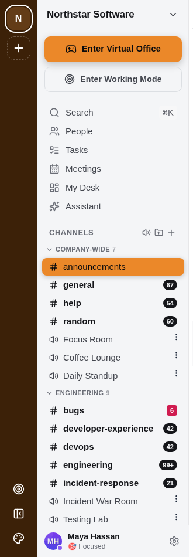

Features / Channel categories, with real permissions
Channel categories, with real permissions
WebA fresh workspace doesn't open as one flat list of 25 channels — it opens organised into categories, and voice rooms live inside those categories instead of a separate section at the bottom.
- Drag-free reorganising: pin a channel, move it between categories, or make your own category.
- Category permissions — set visibility and allowed teams once for a whole category; every channel in it can sync to that setting or override it individually.
- One toggle hides every voice room at once, if you just want to see text channels.
